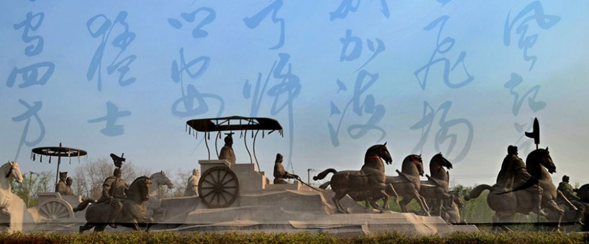
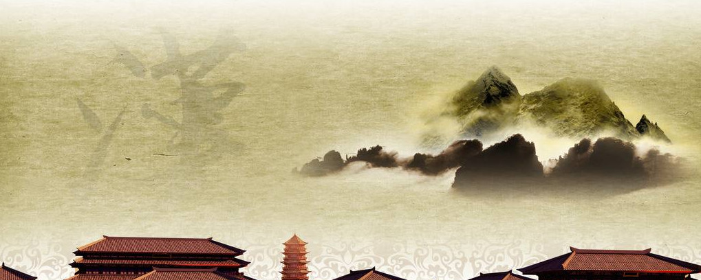

汉文化是中国文化的主体。又称为中华文化、华夏文化、儒家文化，指以儒家文化为主形成的文化。汉族在古代创造了灿烂的文化、艺术，具有鲜明的特色。无论政治、军事、哲学、经济、史学、自然科学、文学、艺术等各个领域，都拥有众多具有深远影响的代表人物和作品。

在春秋战国时期，华夏各诸侯国出现过百家争鸣的生动活泼的局面，各种思想学术流派的成就，与大体同时的古希腊文明东西辉映。至汉武帝时推行“罢黜百家， 独尊儒术”的政策，于是以孔子、孟子代表的儒家思想成为统治思想，统治汉族古代思想与文化近2000年，同时，程度不同地影响着其他少数民族，甚至影响到中国相邻的国家。